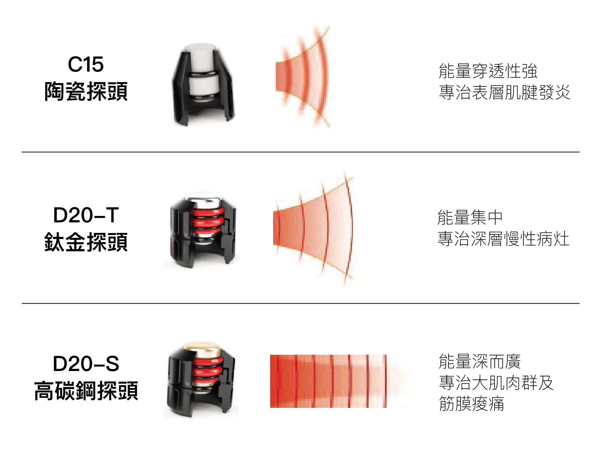
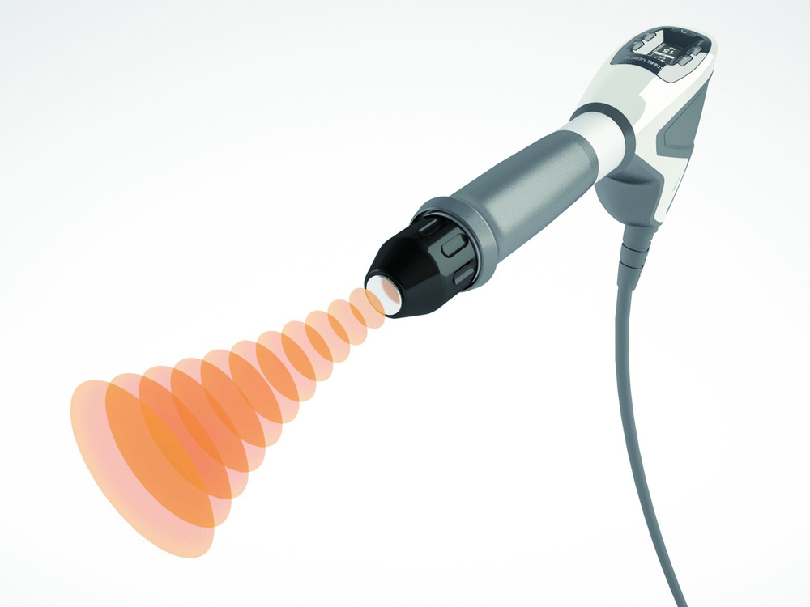
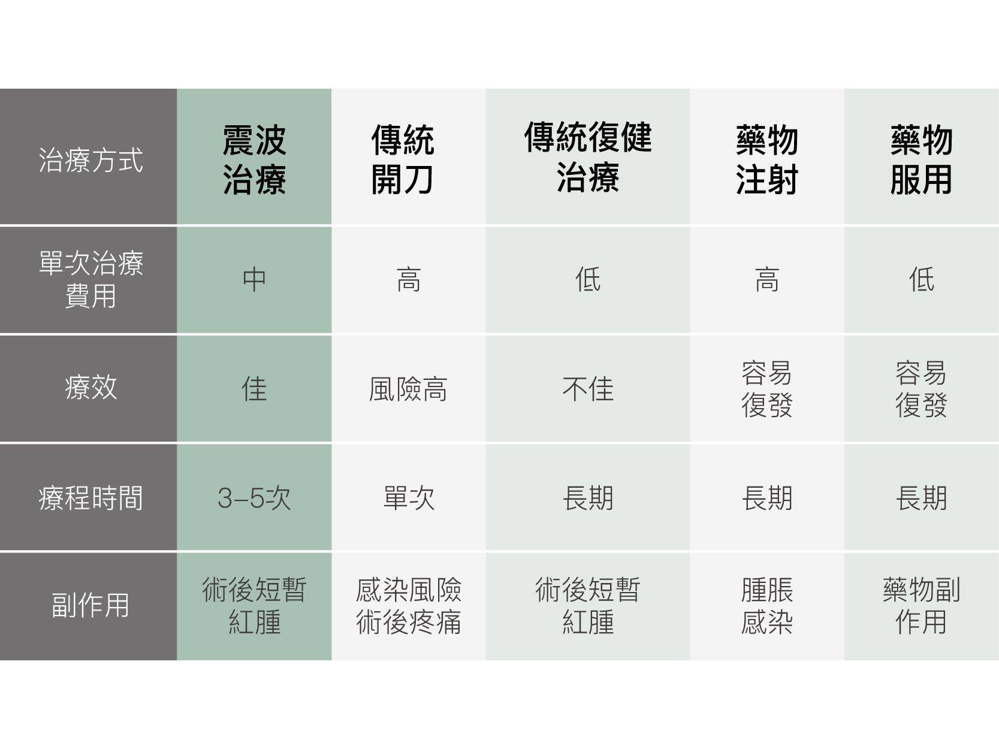

震波是一種在三度空間瞬間傳播、波壓迅速改變的聲波。它不是輻射，所以不會有輻射傷害；它也不是雷射，所以沒有熱效應，可以簡單的把它想像是超大型的超音波，但是能量卻是超音波的100~1000倍。

自然產生的震波-打雷

超音速客機飛行時會產生震波
震波是一種在三度空間瞬間傳播、波壓迅速改變的聲波。它不是輻射，所以不會有輻射傷害；它也不是雷射，所以沒有熱效應，可以簡單的把它想像是超大型的超音波，但是能量卻是超音波的100~1000倍。

震波在高能量時可以進行體外碎石，而在低能量時可以刺激組織新生及修復。
體外震波治療是一種非侵入性的新治療方式，針對慢性疼痛給予高能量震波，有效促使微血管新生，使缺氧缺血的組織恢復血液供應、提高代謝循環及活化細胞，達到組織再生及修復的功能，使症狀快速獲得舒緩，治療效果達八成以上，無不良副作用，亦無傳統手術治療的高風險。

邁氏波震波利用氣動彈道技術產生擴散型震波，以放射狀方式在組織傳遞，對體表(深約5cm)的肌肉及軟組織產生微創作用，進而鬆動沾黏的組織，促進組織血液循環，重新啟動停滯已久的細胞修復機能，使得疼痛的症狀獲得明顯的緩解，恢復患者健康狀態。
特性1：震波覆蓋面積較廣，於體表組織間傳播，病患意外受傷率很低，誤靶率近乎零。
特性2：選擇不同探頭，更有效地解決各種疑難雜症。
經由超音波診斷後，針對頑固型疼痛或慢性肌腱炎提供更深層高能量治療的「聚焦型震波」、以放射狀於體表組織傳播的「擴散型震波」，綜合提供非侵入、免麻醉的治療系統。適用於骨科、復健科、運動醫學及物理治療，可供專業運動員或一般民眾在運動過程發生的運動傷害治療；或治療因長期姿勢不良、缺乏運動所造成的慢性疼痛。
1. 醫師以超音波/X光/觸診等方式，先找出疼痛點，標靶病灶。
2. 針對較深層組織及頑固型疼痛或慢性疼痛給予高能量「聚焦型震波*」有效治療頑固痛點！
*採用「電磁式聚焦震波」或「聚焦型探頭」
3. 針對疼痛部位週遭的大肌肉群及結締組織採用「擴散型震波」進行大面積的施打，緩解肌肉疼痛。
4. 使用V-ACTOR高頻率振動按摩，使肌肉達到舒緩放鬆的效果。
體外震波治療之適應症有哪些？
足底筋膜炎、肱上踝炎(網球肘)、高爾夫球肘、鈣化性肌腱炎、跟腱炎、骨折癒合不全、五十肩、關節痛、媽媽手、肩頸腰背痠痛；因運動、職業或外力所引起之傷害或長年頑固型疼痛等。
體外震波與傳統治療方式之差異為何？
體外震波治療程序 (治療部位請著寬鬆衣物)
每次治療約15-20 分鐘。過程中會有些許疼痛，隨著治療時間疼痛會漸漸減輕。
禁忌患者
震波治療可能發生的併發症
臨床使用至今十餘年，已有超過十萬人次以上接受體外震波治療，臨床效果佳，未有任何顯著或嚴重的併發症或後遺症的報告。
治療後應注意事項：
請依照醫師約定門診時間，定期返回門診追蹤。
治療後偶有些許不適（例如：紅、腫、疼痛），請冰敷15-20 分鐘，或請聯絡治療院所。
治療後，疼痛並不會立刻消失，但會逐漸改善，如無特別疼痛，不需服用止痛藥物。
震波治療80%以上，於第1次療程時（2-3次震波治療），即有相當明顯的改善，若因個人體質或生活習慣導致無明顯療效，再請醫生診斷是否需加上其他複合式療程或進行第二次療程。
治療後組織需要時間恢復與再生，因此治療後四至六週內應避免劇烈運動、調整日常會造成傷害的習慣動作、多加休息，保持耐心，以等待組織復原與症狀的消失。
保險給付說明
此治療項目為自費治療項目，健保與保險並無給付。